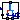
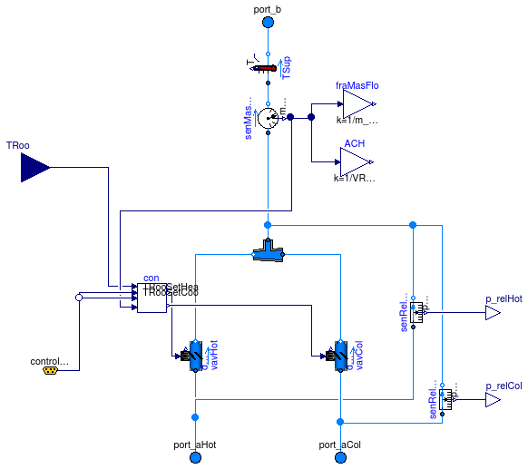

Package with models for the thermal zones
Information
Extends from Modelica.Icons.VariantsPackage (Icon for package containing variants).
Package Content
| Name | Description |
|---|
|  SupplyBranch
| Supply branch of a dual duct system |
Supply branch of a dual duct system

Parameters
| Type | Name | Default | Description |
|---|
| replaceable package MediumA | Modelica.Media.Interfaces.Pa... | Medium model for air |
| Dynamics | energyDynamicsJunctions | Modelica.Fluid.Types.Dynamic... | Formulation of energy balance in junction volumes |
| Boolean | dynamicBalanceJunction | true | Set to true to use a dynamic balance for junction volumes, which often leads to smaller systems of equations |
| Boolean | from_dp | false | = true, use m_flow = f(dp) else dp = f(m_flow) |
| Boolean | linearizeFlowResistance | false | = true, use linear relation between m_flow and dp for any flow rate |
| MassFlowRate | m_flow_nominal | | Mass flow rate cold air deck [kg/s] |
| MassFlowRate | mAirHot_flow_nominal | 0.3*m_flow_nominal | Mass flow rate hot air deck [kg/s] |
| MassFlowRate | mAirCol_flow_nominal | m_flow_nominal | Mass flow rate cold air deck [kg/s] |
| Volume | VRoo | | Room volume [m3] |
Connectors
| Type | Name | Description |
|---|
| replaceable package MediumA | Medium model for air |
| FluidPort_a | port_aHot | Connector for hot deck |
| FluidPort_a | port_aCol | Connector for cold deck |
| FluidPort_a | port_b | Fluid connector b (positive design flow direction is from port_a1 to port_b1) |
| ControlBus | controlBus | |
| input RealInput | TRoo | Measured room temperature |
| output RealOutput | p_relCol | Pressure signal of cold deck |
| output RealOutput | p_relHot | Pressure signal of hot deck |
Modelica definition
model SupplyBranch "Supply branch of a dual duct system"
replaceable package MediumA = Modelica.Media.Interfaces.PartialMedium
"Medium model for air";
Modelica.Fluid.Interfaces.FluidPort_a port_aHot(redeclare package Medium =
MediumA) "Connector for hot deck";
Modelica.Fluid.Interfaces.FluidPort_a port_aCol(redeclare package Medium =
MediumA) "Connector for cold deck";
Modelica.Fluid.Interfaces.FluidPort_a port_b(redeclare package Medium =
MediumA)
"Fluid connector b (positive design flow direction is from port_a1 to port_b1)";
parameter Modelica.Fluid.Types.Dynamics energyDynamicsJunctions=Modelica.Fluid.Types.Dynamics.FixedInitial
"Formulation of energy balance in junction volumes";
parameter Boolean dynamicBalanceJunction=true
"Set to true to use a dynamic balance for junction volumes, which often leads to smaller systems of equations";
parameter Boolean from_dp=false
"= true, use m_flow = f(dp) else dp = f(m_flow)";
parameter Boolean linearizeFlowResistance=false
"= true, use linear relation between m_flow and dp for any flow rate";
parameter Modelica.SIunits.MassFlowRate m_flow_nominal
"Mass flow rate cold air deck";
parameter Modelica.SIunits.MassFlowRate mAirHot_flow_nominal = 0.3*m_flow_nominal
"Mass flow rate hot air deck";
parameter Modelica.SIunits.MassFlowRate mAirCol_flow_nominal = m_flow_nominal
"Mass flow rate cold air deck";
parameter Modelica.SIunits.Volume VRoo "Room volume";
Controls.RoomMixingBox con(m_flow_min=VRoo*3*1.2/3600)
"Room temperature controller";
VAVReheat.Controls.ControlBus controlBus;
Buildings.Fluid.Actuators.Dampers.VAVBoxExponential vavHot(
redeclare package Medium = MediumA,
A=0.6,
use_v_nominal=true,
m_flow_nominal=mAirHot_flow_nominal,
dp_nominal(displayUnit="Pa") = 40,
from_dp=from_dp,
linearized=linearizeFlowResistance) "VAV damper for hot deck";
Buildings.Fluid.Actuators.Dampers.VAVBoxExponential vavCol(
redeclare package Medium = MediumA,
A=0.6,
use_v_nominal=true,
m_flow_nominal=mAirCol_flow_nominal,
dp_nominal(displayUnit="Pa") = 40,
from_dp=from_dp,
linearized=linearizeFlowResistance) "VAV damper for cold deck";
Buildings.Fluid.Sensors.MassFlowRate senMasFlo(redeclare package Medium =
MediumA) "Sensor for mass flow rate";
Modelica.Blocks.Math.Gain fraMasFlo(k=1/m_flow_nominal)
"Fraction of mass flow rate, relative to nominal flow";
Modelica.Blocks.Math.Gain ACH(k=1/VRoo/1.2*3600) "Air change per hour";
Modelica.Blocks.Interfaces.RealInput TRoo "Measured room temperature";
Fluid.FixedResistances.SplitterFixedResistanceDpM mix(
redeclare package Medium = MediumA,
m_flow_nominal={mAirCol_flow_nominal,mAirHot_flow_nominal,mAirCol_flow_nominal +
mAirHot_flow_nominal},
energyDynamics=energyDynamicsJunctions,
massDynamics=energyDynamicsJunctions,
from_dp=from_dp,
linearized=linearizeFlowResistance,
dynamicBalance=false,
dp_nominal=20*{0,0,0}) "Mixer for hot and cold air deck";
Fluid.Sensors.RelativePressure senRelPreHot(redeclare package Medium =
MediumA) "Relative pressure hot deck (compared to room pressure)";
Fluid.Sensors.RelativePressure senRelPreCol(redeclare package Medium =
MediumA) "Relative pressure cold deck (compared to room pressure)";
Modelica.Blocks.Interfaces.RealOutput p_relCol "Pressure signal of cold deck";
Modelica.Blocks.Interfaces.RealOutput p_relHot "Pressure signal of hot deck";
Fluid.Sensors.TemperatureTwoPort TSup(redeclare package Medium = MediumA,
m_flow_nominal=m_flow_nominal) "Supply air temperature";
equation
connect(fraMasFlo.u, senMasFlo.m_flow);
connect(ACH.u, senMasFlo.m_flow);
connect(con.TRoo, TRoo);
connect(vavHot.port_a, port_aHot);
connect(vavHot.port_b, mix.port_2);
connect(mix.port_1, vavCol.port_b);
connect(mix.port_3, senMasFlo.port_a);
connect(senMasFlo.m_flow, con.mAir_flow);
connect(con.yHot, vavHot.y);
connect(con.yCol, vavCol.y);
connect(senRelPreHot.port_a, port_aHot);
connect(senRelPreCol.port_a, port_aCol);
connect(vavCol.port_a, port_aCol);
connect(senRelPreHot.port_b, mix.port_3);
connect(senRelPreCol.port_b, mix.port_3);
connect(senRelPreCol.p_rel, p_relCol);
connect(senRelPreHot.p_rel, p_relHot);
connect(con.TRooSetHea, controlBus.TRooSetHea);
connect(con.TRooSetCoo, controlBus.TRooSetCoo);
connect(senMasFlo.port_b, TSup.port_a);
connect(TSup.port_b, port_b);
end SupplyBranch;
Automatically generated Thu Oct 24 15:17:22 2013.